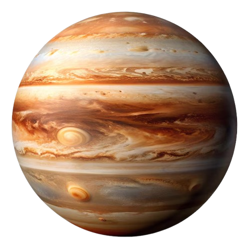

المشتري هو أكبر كواكب النظام الشمسي، ويُعرف بكوكب الغاز العملاق. يتميز بجوٍ كثيف يتكون أساسًا من الهيدروجين والهيليوم. يحتوي على نظام حلقات ضعيفة وأكثر من 79 قمرًا، من بينها قمر غاليليو الكبير "يوروبا" و"غانيميد".
يمتلك المشتري عاصفة ضخمة تُعرف بالبقعة الحمراء الكبرى، وهي عاصفة تشبه الإعصار تستمر لقرون.
